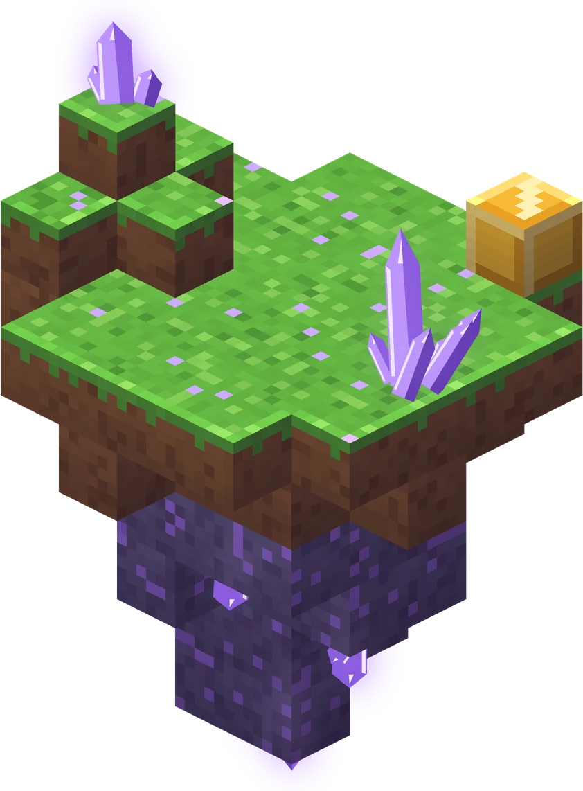
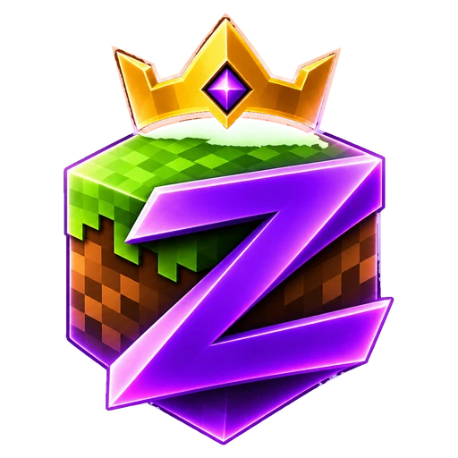
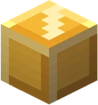
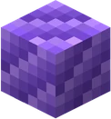
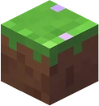
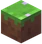

Windows
Setup installer
Zaru.Launcher_99.0.0_x64-setup.exe
57.2 MB · Windows 10 and 11, 64-bit
Zaru installs Minecraft, Java and a tuned Fabric pack for you. Sign in with Microsoft or start with a nickname, then press Play.





These are the Linux build, version 99.0.0, on a fresh start. The window is 1200 by 760.


Pick one on the first screen. You can add the other later.
Microsoft shows a device code at microsoft.com/link and you approve it there. Zaru never sees the Microsoft password. Realms and official servers need this, with an account that owns Minecraft.
Three to sixteen letters, digits or underscores starts a local world. Realms and official servers will refuse it.
Millida, when you want it. Skins, friends, parties and Millida SMP talk to Millida’s servers. Play itself never waits on that sign-in.
This is the Millida launcher, renamed and built for friends on Windows and Linux. The setup that usually takes an evening is already done.

You never install Java yourself. Press Play and the launcher brings down the runtime, the libraries and the game files before the world opens.
The default instance is Minecraft 1.21.11 on Fabric with six performance mods in the pack. Nothing to configure.
Add Fabric or other packs from the catalog on top of the starter instance, and keep every build in its own place.
Change a skin and invite people from the lobby. Friends, the wardrobe and Millida’s own servers use that account when you want them.
The default instance is Minecraft 1.21.11 on Fabric. Every mod below is a performance mod. None of them change how the game plays.
A rewrite of the rendering engine. The single biggest frame-rate gain in the pack.
Optimises the game’s own logic (mobs, physics, chunks) without changing behaviour.
Speeds up the smaller draw calls: menus, text, items and the HUD.
Stops drawing mobs and chests that are hidden behind blocks you can see.
Extends the same idea to block entities and the pieces around them.
Drops the frame rate while the window sits in the background, so the laptop stays quiet.
Version 99.0.0 for 64-bit Windows and Debian-based Linux. macOS is not in this build.
Zaru.Launcher_99.0.0_x64-setup.exe
57.2 MB · Windows 10 and 11, 64-bit
Zaru.Launcher_99.0.0_amd64.deb
63.5 MB · Debian and Ubuntu, 64-bit
1e49647d0cc38fc2e4e2cd9ad52e5c01a4f89642d987d96332e4e1a3b41dbeee568a7678c7869e3eabeec44696e268f41ecb0127567f7cac278f58110edd9428
Windows: Get-FileHash .\Zaru.Launcher_99.0.0_x64-setup.exe ·
Linux: sha256sum Zaru.Launcher_99.0.0_amd64.deb
Not much. The launcher downloads the heavy parts itself on the first run.
gstreamer1.0-plugins-base, -good and -libav.Download the file for your system.
If the browser wraps it in a zip, unzip that first.
Windows: run the setup exe. Linux: install the .deb, then open Zaru Launcher.
Choose Microsoft or a nickname, then Play. The first launch downloads the game.
This installer is not code-signed. If Windows says it protected your PC, choose More info, then Run anyway. That warning is expected on a personal build like this one.
Zaru is a personal build of the Millida launcher, which is open source under the GPL-3.0. The name and the look are the only things that changed. The accounts, skins and servers behind it are still Millida’s.
Millida did not make this build and does not support it. It is not affiliated with Mojang or Microsoft. Minecraft is a trademark of Mojang.
Yes. This download has no price and the installer does not add a second app.
Not to open a local world. A nickname starts the game. Official multiplayer and Realms need a real Microsoft account that owns Minecraft.
No. Play downloads the Java build that the chosen version of the game needs.
The installer is not code-signed, so SmartScreen shows a blue warning. Choose More info, then Run anyway. The SHA-256 of both files is listed in the download section if you want to check what you got.
No. Zaru is a personal build of the open-source Millida launcher (GPL-3.0). Millida did not make this build and does not support it. It is not affiliated with Mojang or Microsoft. Minecraft is a trademark of Mojang.
This release is Windows and Linux only.